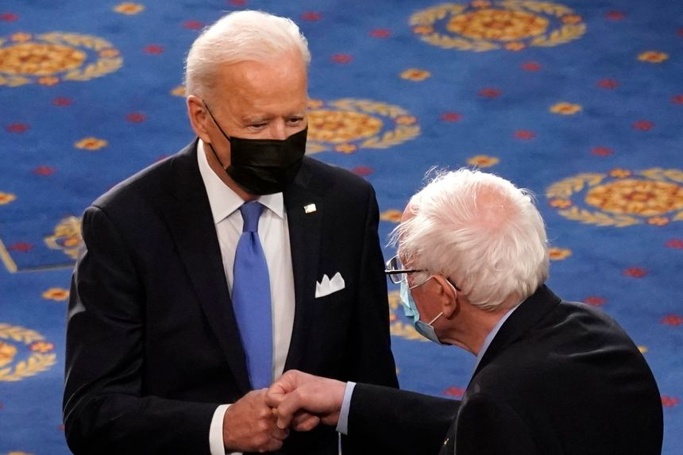

| 时间 | 分类 | 标题 | 副标题 | 正文 | 图片 |
|---|---|---|---|---|---|
| 2021-10-19 23:52:00 | World | China’s New Home Prices Fall for First Time in Six Years as Rules Bite | Average prices in 70 major cities edged down 0.08% in September from August, the first such month-on-month decline since 2015 | BEIJING—New home prices in China fell on a monthly basis for the first time in more than six years in September, new official data showed, as Beijing’s measures to curb housing speculation and cool the property sector begin to bite. Average new home prices in 70 major cities edged down 0.08% in September from the previous month, China’s National Bureau of Statistics said Wednesday. Though small, it is the first such month-on-month decline since March 2015, and follows August’s 0.16% increase. |
|
| 2021-10-19 23:03:00 | Politics | FBI Raids Homes Owned by Relatives of Russian Oligarch Oleg Deripaska | Metals tycoon, who figured in post-2016 investigations, was under U.S. sanctions imposed in 2018 | The Federal Bureau of Investigation on Tuesday conducted raids of residences in Washington and New York owned by the family of Russian metals tycoon Oleg Deripaska, who figured prominently in the post-2016 investigations of Trump campaign officials, FBI spokeswomen and a spokesman for Mr. Deripaska said. Mr. Deripaska’s spokesman confirmed the raids of the residences, saying the searches were carried out pursuant to court orders stemming from U.S. sanctions. The spokesman said both properties are owned by Mr. Deripaska’s relatives. |
 |
| 2021-10-19 22:23:00 | Politics | Navy Faults Seamen, Captains, Admirals in Loss of USS Bonhomme Richard Ship | Navy charges the fire had been set, but failures throughout the ranks doomed the crew’s response | A series of failures starting with sailors and reaching as high as Navy admirals was to blame for the loss of a U.S. amphibious assault ship in a five-day fire last year, a report set to be released Wednesday has concluded, Navy officials said. “Although the fire was started by an act of arson, the ship was lost due to an inability to extinguish the fire,” the 400-page Navy report on the July 2020 fire aboard USS Bonhomme Richard found, according to the officials. |
|
| 2021-10-19 22:13:00 | Business | Netflix Co-CEO Says He ‘Screwed Up’ When Defending Dave Chappelle Special | ‘I should have recognized the fact that a group of our employees was really hurting,’ Ted Sarandos says in interview | Netflix Inc. Co-Chief Executive Ted Sarandos said he “screwed up” in his efforts to communicate with employees who were upset over “The Closer,” a recent comedy special by Dave Chappelle in which he made remarks that some viewed as offensive to the transgender community. In emails to Netflix staff after the special’s debut earlier this month, Mr. Sarandos defended “The Closer,” citing its popularity on the platform and the company’s commitment to creative freedom. He also said the company believed “content on screen doesn’t directly translate to real-world harm.” |
|
| 2021-10-19 21:07:00 | Risk & Compliance Journal | Treasury Seeks More Money for Illicit-Finance Oversight, Including Crypto and Cybercrime | Deputy Treasury Secretary Wally Adeyemo says hiring more staff with technology expertise is critical | ||
| 2021-10-19 19:41:00 | Tech | Snap CEO Evan Spiegel Says Regulation Alone Won’t Fix Social Media | Business practices need to support users’ well-being, chief executive says at WSJ Tech Live conference | The boss of social-media company Snap Inc. says government regulation isn’t a substitute for companies working to promote the well-being of their users. “We’ve always been very open about regulation,” Snap Chief Executive Evan Spiegel said Tuesday at The Wall Street Journal’s Tech Live conference. “The important point to make is that regulation is not a substitute for moral responsibility and for business practices that support the health and well-being of your community, because regulation just happens far too late.” |
|
| 2021-10-19 19:34:00 | Business | Boeing’s First Astronaut Flight on Starliner Faces Further Delay | Aerospace giant still trying to determine why valves on space vehicle’s propulsion system became stuck | Boeing Co. executives said the company’s Starliner space vehicle might not carry astronauts until the end of next year, potentially putting it a year behind a previous date to deliver people to orbit for NASA. After completing a demonstration flight without crew members during the first half of 2022, a test mission with astronauts could occur “maybe by the end of the year,” according to John Vollmer, a Boeing program manager overseeing the Starliner. |
|
| 2021-10-19 18:58:00 | Real Estate | Marriott Made $220 Million in Resort Fees Without Proper Disclosure, D.C. Official Says | District of Columbia Attorney General’s office saysMarriott violates consumer-protection laws by failing to disclose the fees upfront | ||
| 2021-10-19 18:44:00 | Opinion | Ethics Shenanigans at the Labor Board | Former SEIU lawyers are poised to rule on SEIU priorities such as the ‘joint-employer’ rule. | ||
| 2021-10-19 18:44:00 | Opinion | Who Gets ‘Canceled’? | Students discuss who is being canceled and why. | ||
| 2021-10-19 18:43:00 | Politics | GOP Congressman Jeff Fortenberry Indicted in Campaign Finance Probe | Nebraska lawmaker is alleged to have lied about accepting 2016 campaign funds from a foreign billionaire | ||
| 2021-10-19 18:41:00 | Opinion | The GameStop Scandal That Wasn’t | An SEC staff report finds no evidence of market manipulation. | ||
| 2021-10-19 18:38:00 | Opinion | The West’s Energy Masochism | Putin takes advantage of democratic Europe’s self-defeating climate policies. | ||
| 2021-10-19 18:33:00 | Politics | Federal Government Moves Against Three States Over Covid-19 Worker Safety | The GOP-led states—Utah, Arizona and South Carolina—have been notified of the Labor Department decision | The Labor Department is moving to strip three Republican-led states of their ability to operate their own workplace-safety bodies for failing to adopt Covid-19 safety standards at least as effective as the federal government’s, the latest development in a fight between the Biden administration and some states over federal coronavirus rules. Labor Department officials said Tuesday the agency was initiating the process of revoking state-level oversight of workforce-safety programs in Utah, Arizona and South Carolina. The federal government said it began taking steps after the three states didn’t adopt, at minimum, the federal Covid-19 safety plans for healthcare workers, which the Occupational Safety and Health Administration—a Labor Department subagency—released in June. The standard included requirements on masking, social distancing and paid leave for Covid-19 recovery, the federal government said. |
|
| 2021-10-19 18:26:00 | Markets | Netflix Finds Even ‘Squid Game’ Only Has So Much Reach | While new blockbuster series helps lift subscriber growth, a projection only in line with forecasts tempers reaction following a stock-price surge | ||
| 2021-10-19 18:26:00 | Opinion | Iran Won’t Stop Until It Has a Nuclear Weapon | Khamenei and his regime haven’t gone to all this trouble merely to become a ‘threshold state.’ | ||
| 2021-10-19 18:25:00 | Opinion | What Colin Powell Learned From His Own Story | Anyone can go as far as his talents will take him—only in America. | ||
| 2021-10-19 18:24:00 | Opinion | San Francisco Has Become a Shoplifter’s Paradise | Walgreens has closed 22 stores in the city, where thefts under $950 are effectively decriminalized. | ||
| 2021-10-19 18:22:00 | Opinion | Netflix Isn’t Brave, and That’s Fine | In sticking up for Dave Chappelle, it’s really defending its own leadership. | Public companies are not in the business of self-sacrificial gestures for reasons of principle or any other reason. Their mission primarily is what’s best for the share price, i.e., in the best interest of shareholders. |
|
| 2021-10-19 18:21:00 | Books & Arts | ‘Master of the Game’ Review: The Uneven Paths to Peace | Liberal internationalists prefer quick dashes and world transformation. Henry Kissinger counseled a slower, messier course. | ||
| 2021-10-19 18:05:00 | Business | United Airlines’ Profit Dented by Delta Variant | Carrier’s quarterly revenue outpaces analysts’ targets; $473 million in profits include final government grants to pay workers | United Airlines Holdings Inc. said the spread of the more-contagious variant of Covid-19 slowed flying during the third quarter but hasn’t derailed its recovery. United on Tuesday reported a third-quarter profit of $473 million, including the final $1.1 billion in government grants the airline received to pay workers during the quarter. Excluding the government aid, United reported a loss of $329 million, compared with a profit of over $1 billion in the third quarter of 2019. |
|
| 2021-10-19 17:50:00 | Markets | Credit Suisse to Pay $475 Million, Admits Defrauding Investors to Settle Mozambique Charges | Bank engaged in conspiracy to defraud investors by hiding information about some loans | Credit Suisse Group AG agreed to pay $475 million and forgive $200 million Mozambique owes to investors in coordinated settlements with U.S. and European authorities over loans the bank made in the country. A subsidiary of the Swiss bank pleaded guilty to wire fraud conspiracy charges in New York federal court Tuesday. Credit Suisse, which previously had maintained it was a victim of rogue employees, admitted to defrauding investors who bought some of the debt and agreed to pay $275 million to resolve both a criminal probe by the Justice Department and a civil investigation by the Securities and Exchange Commission. |
|
| 2021-10-19 17:48:00 | World | U.S. to Issue Migration Appeal to South American Nations | Blinken, in a meeting in Colombia, will urge countries to share responsibility for migration patterns | ||
| 2021-10-19 17:45:00 | Politics | Democrats Try to Salvage IRS Bank-Account Reporting With Scaled-Back Plan | Key reporting threshold would go to $10,000 from $600; banks, GOP say plan is unworkable | ||
| 2021-10-19 17:37:00 | Politics | Congress Is Losing Patience With Big-Tech Resistance, Klobuchar Says | Democratic senator says the push for regulation got a boost from the disclosure of some of Facebook’s internal research | ||
| 2021-10-19 17:27:00 | Markets | First Bitcoin Futures ETF Rises in Trading Debut | ProShares Bitcoin Strategy ETF advances nearly 5% following its closely watched launch | ||
| 2021-10-19 17:26:00 | Business | Netflix Adds More Users Than It Predicted, Boosted by ‘Squid Game’ | Streaming service adds roughly 4.4 million subscribers amid increased competition and the typical summer slowdown |  |
|
| 2021-10-19 17:25:00 | Opinion | How the Grateful Dead Enlivened the Record Industry | Released 50 years ago this week, the group’s second live double album, nicknamed ‘Skull and Roses,’ captured the vibe of their legendary concerts. | ||
| 2021-10-19 17:22:00 | Books & Arts | ‘Found’ Review: Families Near and Far | In Amanda Lipitz’s Netflix documentary, three adopted cousins find one another and then return to China to search for their past | ||
| 2021-10-19 17:18:00 | Business | The Elizabeth Holmes Trial: Former Product Manager Details Shortcuts as Devices Failed | Daniel Edlin says his job included scripted tours and decoy blood-testing devices | ||
| 2021-10-19 16:37:00 | Politics | Jan. 6 Committee Set to Recommend Contempt Charge for Steve Bannon | Former Trump adviser has declined to cooperate after panel investigating Capitol attack issued subpoena | ||
| 2021-10-19 16:35:00 | Opinion | Woke at Wellesley Public Schools | Parents sue over policies that segregate students and chill speech. | ||
| 2021-10-19 16:28:00 | Waller: If Inflation Doesn’t Cool by Year-End, Fed Could Bring Rate Increases Forward | Federal Reserve governor also supports starting taper of asset purchases soon | Federal Reserve Gov. Christopher Waller said the central bank could move forward the timeline for raising short-term interest rates to restore price stability if high levels of inflation don’t start cooling soon, adding that he supports the Fed slowing its asset buying stimulus effort starting next month. Mr. Waller said in a virtual appearance Tuesday that when it comes to moving up what is now a near zero federal-funds rate target range, “the pace of continued improvement in the labor market will be gradual, and I expect... |
||
| 2021-10-19 16:26:00 | Business | GE, Union Pacific Mandate Covid-19 Vaccine for U.S. Workers | More large U.S. companies are imposing vaccine requirements to meet a deadline of Dec. 8 for federal contractors | ||
| 2021-10-19 16:21:00 | Opinion | It’s Not Your Turn for Shortages | Americans have every right to demand a prosperous society. |  | |
| 2021-10-19 15:53:00 | Life & Work | Where to Travel for Thanksgiving—5 No-Fuss Getaways | From a Cape Cod resort to a Chicago luxury hotel, indulgent alternatives to slaving over the bird—each featuring a fabulous feast | ||
| 2021-10-19 15:22:00 | World | Afghanistan Withdrawal to Be Subject of State Department Investigation | Internal watchdog tells Congress it will review handling of embassy planning, refugees and special immigrant visa program | ||
| 2021-10-19 15:15:00 | Books & Arts | ‘Fidelio’ Review: A Harsh Sentence | San Francisco Opera new production of Beethoven’s work, set in a detention facility, might leave some hoping for an early release. | ||
| 2021-10-19 15:10:00 | Markets | Auto Risks Are Dragging on Insurance Stocks | Slow-moving risks in the auto business seem to be a bigger concern for shares of insurers like Travelers than catastrophes such as Hurricane Ida | ||
| 2021-10-19 14:42:00 | Politics | Biden Hosts Democrats to Try to Narrow Differences on Climate, Benefits | Emissions and income caps for programs set to figure prominently in White House meetings with Sen. Kyrsten Sinema, others | ||
| 2021-10-19 14:32:00 | Markets | China Sells $4 Billion of Dollar Bonds, Borrowing Cheaply Once Again | The four-part deal comprised bonds that mature in three, five, 10 and 30 years | ||
| 2021-10-19 14:32:00 | CFO Journal | Charter Appoints New CFO, Fills Other Top Roles in Management Shuffle | The cable giant promoted finance executive Jessica Fischer to CFO as part of a string of management changes | ||
| 2021-10-19 14:24:00 | Tech | Facebook Settles With U.S. Government Over Improperly Reserving Jobs for Immigrants | The social-media company faces more than $14 million in penalties tied to the federal probe | ||
| 2021-10-19 14:05:00 | Business | Instacart Expects More Growth in Grocery Delivery | Despite slower demand, CEO Fidji Simo says customers won’t revert to pre-pandemic patterns: ‘It has changed consumer habits forever’ | Instacart Inc.’s chief executive said the company foresees more runway for growth in grocery delivery, saying the Covid-19 pandemic has fueled lasting changes in the way consumers buy food. The boom in business that pandemic-driven lockdown orders drove for Instacart and other food-delivery companies has slowed recently as many consumers shop in person again. Uncertainty around the pandemic’s trajectory has been challenging for delivery companies and other businesses to navigate. |
|
| 2021-10-19 13:24:00 | Life & Work | ESPN Reporter Allison Williams Quits Over Vaccine Mandate, Fertility Concerns. Many Share Her Fears. | Covid-19 vaccine hesitancy among women who are pregnant or trying to conceive remains high, despite no links found between the shots and fertility problems | ||
| 2021-10-19 13:22:00 | Opinion | Biden’s Real Tax Target Isn’t the Superrich | His plan would sock it to the ‘working rich,’ whose taxes are already high, not billionaire investors. | ||
| 2021-10-19 13:21:00 | Opinion | Are the U.S. and Europe Breaking Up? | The trans-Atlantic alliance is in trouble if our friends abroad won’t confront China. | ||
| 2021-10-19 13:12:00 | World | U.K., Joining Trend, Sees Nuclear as Key to Cut Carbon Emissions | Britain’s plan for net-zero carbon output by 2050 includes new nuclear investments, with China, France and India also expanding production | ||
| 2021-10-19 13:00:00 | Tech | Pixel 6 and 6 Pro: Google Says It’s Serious About Smartphones. For Real This Time. | The latest Pixel smartphones have colorful designs, cool camera tricks and powerful Google-designed processors. But how many will buy one instead of a Samsung Galaxy phone or Apple iPhone? | ||
| 2021-10-19 12:51:00 | Books & Arts | ‘Dune’ Movie Review: From Grand Vision to Sand Trap | The space epic, in theaters and on HBO Max, features a star-studded cast including Zendaya, Timothée Chalamet and Oscar Isaac. | ||
| 2021-10-19 12:30:00 | Business | Overwhelmed by Social Media, Cybersecurity and Other Tech Topics? Read These Books. | We asked experts what nontechies can read to get their arms around some of the biggest issues in technology. Here are their recommendations. |  |
|
| 2021-10-19 12:00:00 | Life & Work | Why ‘Dune’ Is the Most Fashionable Movie of the Year | In the new fantasy epic, leading man Timothée Chalamet has a wardrobe as vast as the desert planet he traverses. How to steal his sci-fi style—because believe it or not, you’ll want to. | ||
| 2021-10-19 11:43:00 | Business | Comcast Launches Smart TV for U.S. Market in Bid to Take On Roku, Amazon | China’s Hisense will manufacture the XClass TV, which will be sold at Walmart |  |
|
| 2021-10-19 11:32:00 | Opinion | The Art Institute of Chicago’s Loss—and Ours | ‘I owe my entire career as an art historian to the docents of the Art Institute of Chicago.’ | ||
| 2021-10-19 11:22:00 | Opinion | Space Is No Longer Government’s Exclusive Domain | Private businesses can and should lead the charge into the final frontier. | ||
| 2021-10-19 11:19:00 | Opinion | Leave School-Board Elections Alone on the Ballot | Voters will give those races more attention and demand more information. | ||
| 2021-10-19 11:01:00 | Real Estate | Kitchen Islands—Does Anyone Really Need Two? We Asked Interior Designers | Are dual islands—one for prep, one for seating—useful additions to the heart of the home or offensively showy statements of affluence? Design pros debate the growing trend. | ||
| 2021-10-19 10:49:00 | World | Gangs Threaten to Tip Haiti Into a Failed State | Criminal rings, like the one that kidnapped American missionaries, control as much as two-thirds of Haiti, a lawless scenario that threatens regional stability | ||
| 2021-10-19 10:48:00 | Markets | Johnson & Johnson’s Stock Deserves a Booster | Wall Street’s excessive focus on vaccine sales creates a buying opportunity for J&J shares | ||
| 2021-10-19 10:40:00 | World | Russia’s Move to Cut NATO Ties Complicates Biden’s Pivot to China | Moscow will withdraw its diplomats and close the alliance’s Russian office following NATO’s expulsion of Russian officials as spies | ||
| 2021-10-19 10:00:00 | Tech | Facebook Portal Go Review: The Best and Worst Video-Chat Box | The new Portal Go is a fantastic battery-powered smart display for Zoom. Too bad it’s so hard to recommend. | ||
| 2021-10-19 09:53:00 | U.S. | What the Elizabeth Holmes Trial Is Revealing About Theranos | Jurors have learned of a previously undisclosed lab director and the names of the investors behind the wire fraud counts | The courtroom testimony that has unfolded so far in the criminal trial of Theranos Inc. founder Elizabeth Holmes has given even close watchers of the company new nuggets of information. While much of the Theranos story has been closely chronicled by The Wall Street Journal and others, the trial has revealed details about the company’s losses, its fundraising and the lengths to which prosecutors say it went to deceive its partners. |
|
| 2021-10-19 09:52:00 | Markets | Dover, Procter & Gamble, Travelers, Netflix: What to Watch in the Stock Market Today | Travelers and Steel Dynamics shares rose on results; Halliburton slipped | Wall Street indexes opened higher amid another flurry of earnings. Here’s what we’re watching in Tuesday’s session. Write to Joe Wallace at joe.wallace@wsj.com |
|
| 2021-10-19 09:47:00 | Life & Work | Feeling Too Schlubby to Have Sex? It’s Not Just You. | Many of us aren’t feeling great about our bodies right now, and it’s putting a damper on our love lives. Sex therapists’ advice: Just start touching. | One evening while watching Netflix with her husband, Nicole Katsulis worked up her nerve and asked him something terrifying: “Why don’t you want to have sex with me?” Ms. Katsulis, a teacher, knew her body had changed during the pandemic. She’d had a baby right before it started, then spent months snacking while working from home. Countless nights snuggled with her family in front of the TV bingeing on chips and cookies had also taken their toll. Now, she worried that she no longer turned her husband on. |
|
| 2021-10-19 09:09:00 | Markets | Travelers Profit Falls 20% on Hurricane Ida, Auto Claims | Property-casualty insurer posts quarterly income of $662 million | Property-casualty insurer Travelers Cos. posted a 20% decline in net income in the third quarter, weighed down by storm damage and car-wreck related claims. Travelers is among the largest issuers of insurance to U.S. businesses, and it sells car and home insurance to individuals and families. |
|
| 2021-10-19 08:12:00 | Markets | China’s Power Crisis Has Solar and Wind Companies Seeing Green | Power sector measures triggered by blackouts could help drive next phase of China’s green power build-out | China’s power crunch may be darkening the sky for now. But it is already shaping up as an impetus for greener electricity in the country. Recent severe power shortages in China have led to factory shutdowns and blackouts, and rippled through global supply chains. Skyrocketing prices of coal, the main fuel for producing power in China, are a key cause—especially when combined with a rigid electricity pricing mechanism. Many power plants in China are operating at a loss. Tough power consumption restrictions from local governments scrambling to meet carbon targets are another factor. |
|
| 2021-10-19 08:03:00 | Markets | Apollo Targets $1 Trillion in Assets, Aiming to Outpace Blackstone | Investing giant hopes Athene acquisition will supercharge its AUM growth | Apollo Global Management Inc. said it expects its assets under management to double to about $1 trillion by 2026, setting up a race with fellow investment behemoth Blackstone Inc., which has set the same lofty target. Apollo expects the merger with its insurance affiliate Athene Holding Ltd. , which is scheduled to close in January, to power much of the projected growth. The firm released new financial guidance ahead of a planned investor day Tuesday. Apollo managed $472 billion in assets as of the end of the second quarter. |
|
| 2021-10-19 08:00:00 | Real Estate | New York Housing Demand Surges After Pandemic Slowdown | More than 4,500 Manhattan condo and co-op sales closed in third quarter, Douglas Elliman says, the most in the period in over 30 years | New York City’s housing market is undergoing a powerful rebound, fueled by New Yorkers trading up, out-of-staters moving in, and others looking beyond the pandemic’s aftershocks to make a long-term bet on the city. More than 4,500 Manhattan condo and co-op sales closed from July through September, according to a Douglas Elliman market report. That marked the most third-quarter sales in more than three decades, the firm said. |
|
| 2021-10-19 08:00:00 | Business | Newest Class of Corporate Directors Is the Most Diverse Yet, but Gains Are Uneven | A surge of Black nominees and more women join S&P 500 boardrooms, two studies show; half of public companies added no new directors over the past year | U.S. public companies added the most diverse slate of new directors on record to their boards over the past year, with a surge of Black nominees and elevated numbers of women and first-time directors, according to two new studies. The gains were uneven, with about half of public-company boards adding no new members and smaller companies lagging behind their bigger counterparts, according to one of the studies, from the Conference Board and data analytics firm ESGauge. In addition, more companies of all sizes have started disclosing the racial and ethnic makeup of their boards. |
|
| 2021-10-19 08:00:00 | Real Estate | Kushner Cos. Goes Outside the Family to Replace Jared as CEO | Laurent Morali, president of the real-estate company, will take over as chief executive | Jared Kushner’s family real-estate company is for the first time turning to a nonfamily member to lead the business, after the former senior White House adviser said that he wouldn’t be returning. Laurent Morali, president of Kushner Cos., will take over as chief executive effective immediately, the firm said. The CEO post has essentially been vacant since 2016, when Mr. Kushner began working full time on Donald Trump’s presidential campaign. After Mr. Trump won, Mr. Kushner took a senior position in the administration. |
|
| 2021-10-19 07:42:00 | Business | Higher Sales Across Divisions Lift Johnson & Johnson as Healthcare Sector Recovers | Company’s revenue rose 11% year over year in third quarter to $23.34 billion | Johnson & Johnson ’s sales climbed in the latest quarter compared with the same stretch of last year, reflecting a return of more doctor’s visits and medical procedures after the pandemic disrupted the industry. The company’s revenue rose 11% year over year in the third quarter to $23.34 billion. Its results are closely watched in the healthcare sector because its products span multiple categories. |
|
| 2021-10-19 07:30:00 | Markets | In Social Media, Fortune Favors the Fleeting Snap | Snapchat’s early focus on privacy should now pay dividends | Social media’s improbable new safe space can be a more profitable one. The Wall Street Journal’s recent investigative series on Facebook found that its algorithm can promote objectionable content and that the company knew Instagram can be harmful for teens. Lawmakers have since convened to better understand how social media can negatively affect children online. While all social media has pitfalls, Facebook’s shortcomings have revealed others’ strengths. Ironically, Snap Inc.’s Snapchat, a social-media platform long ridiculed for the sharing of risqué photos, today seems like one of the safer places for children online. |
|
| 2021-10-19 07:06:00 | Business | Procter & Gamble to Raise Prices on More Staples | Company says cost of materials and freight jumped more than expected, cutting into profit | Procter & Gamble Co. is raising prices on a host of household staples as costs for freight and raw materials rise faster than the consumer-product giant anticipated. |
|
| 2021-10-19 07:03:00 | Markets | Apple Now All-In on In-House Chips | Last of its Intel-powered laptops gets upgrade to Apple’s M1 chip family following a projected record year for Mac sales | Breaking up may be hard to do, but Apple Inc. made this one look easy. The new line of MacBook Pro models that Apple announced on Monday are the last of the Mac laptops to get the company’s in-house processor called the M1. That comes less than a year after the company first unveiled the chip, which replaces the Core family from Intel Corp. as the computer’s main central processor. At the time, Apple promised that it would move its entire Mac family to its in-house chips “within a couple years.” |
|
| 2021-10-19 06:49:00 | Markets | Stock Futures Rise as Major Companies Report Earnings | Results are due from Procter & Gamble ahead of the market open | U.S. stock futures ticked up ahead of a slew of earnings that investors will parse for insight into how companies are faring with inflation and supply-chain disruptions. Futures for the S&P 500 ticked up 0.3% Tuesday, indicating that the broad market index will rise after the New York opening bell. Contracts for the tech-focused Nasdaq-100 edged 0.2% higher and futures for the Dow Jones Industrial Average rose 0.2%. Major U.S. stock indexes started the week with a mixed performance Monday. |
|
| 2021-10-19 06:36:00 | Markets | Household Brands Count the Rising Cost of Trains, Planes and Automobiles | Supply-chain challenges have pushed up the price of transporting goods from the factory floor to shelves, but consumer companies will feel varying degrees of pain | No matter the mode of transport, moving goods from A to B has become more expensive. The quirks of consumer companies’ supply chains mean they won’t all be equally hit. Demand for consumer products has been unusually strong since countries began to reopen their economies. This has put pressure on global transport routes and increased the cost of logistics. In the first quarter of 2020, a company could ship goods by sea for $1,600 per 40-foot equivalent unit, or roughly one large shipping container. By September 2021, the bill had climbed to $10,200, Bernstein analysis shows. |
|
| 2021-10-19 06:03:00 | Markets | Day Traders Are Driving Uranium Prices Higher | Individual traders flock to Canadian uranium investment trust that has snapped up nuclear fuel and boosted prices | Enthusiasm from individual traders is reshaping the market for nuclear fuel that generates a tenth of the world’s electricity and sending uranium-linked stocks higher. After languishing for a decade after the Fukushima disaster led Japan and Germany to close nuclear reactors, spot uranium prices have shot to $47 a pound from $32.25 at the start of August. They remain below their peak of $137 in 2007, according to price-tracker UxC LLC. |
|
| 2021-10-19 06:01:00 | Business | ‘Bad Bets’, Episode 2 | How Jeffrey Skilling’s rise set the stage for Enron’s fall | Former Enron CEO Jeffrey Skilling was arguably the face of Enron’s meteoric rise in the ’90s. He took a sleepy energy company and turned it into one of the most innovative corporations in the world. By the end, Enron had its fingers in all kinds of projects—including America’s nascent broadband networks. In the second episode of WSJ’s Bad Bets podcast, Journal reporters John Emshwiller and Rebecca Smith explore how Skilling’s rise set the stage for Enron’s fall. Listen now. |
|
| 2021-10-19 06:00:00 | Investor-Backed Group Aims to Analyze 10,000 Companies’ Climate-Change Plans | BlackRock is a new supporter of the Transition Pathway Initiative, which is expanding its coverage from roughly 400 companies now |  |
||
| 2021-10-19 05:30:00 | Politics | U.S. Lawmakers Step Up Pressure to Adopt Tougher Tech Laws | Efforts to protect kids online, discourage harmful content gain traction in Congress after years of inaction | WASHINGTON—Legislation to curb the influence of big technology companies, including putting new restrictions on online content, is starting to gain traction in Congress as lawmakers narrow their targets and seek to build on public attention. A bipartisan group of senators including Amy Klobuchar (D., Minn.) and Chuck Grassley (R., Iowa) came out last week in favor of legislation that would prohibit dominant platforms from favoring their own products or services, boosting similar efforts already under way in the House. |
|
| 2021-10-19 05:30:00 | CFO Journal | Some Auditors Made Insufficient Assessments of Companies’ Revenue and Loan Losses, PCAOB Says | The U.S. audit watchdog inspected 153 audit firms, down 13% from a year earlier | ||
| 2021-10-19 05:30:00 | Tech | Sen. Amy Klobuchar, CEOs of Snap, Instacart and Substack Headline Second Day of WSJ Tech Live | Google’s Marian Croak, CAA Co-Chairman Richard Lovett and Headspace Health president are also set to speak | The Wall Street Journal’s hybrid Tech Live conference continues for a second day with top executives and regulators set to discuss privacy, big tech regulation and changes in the entertainment industry. Here is a rundown of interviews. Access to the conference is complimentary for Journal subscribers. You can see more details here. |
|
| 2021-10-19 05:30:00 | Property Report | App Deal Highlights a Push to Lure Workers Back Into Offices | Real-estate data firm VTS is buying office-app developer Lane Technologies for $200 million | Real-estate software and data firm VTS has agreed to acquire an app company that aims to simplify office life as more workers are heading back to their desks. VTS, whose primary business is providing online tools to landlords for managing leases and tenant data, said it is buying Toronto-based Lane Technologies Inc. The price is about $200 million, according to people familiar with the matter, making it one of the largest proptech acquisitions ever. |
|
| 2021-10-19 05:30:00 | Real Estate | RV Capital of America Tops WSJ/Realtor.com Housing Index in Third Quarter | Index ranks cities for appreciating housing markets and lifestyle amenities | Small U.S. cities dominated The Wall Street Journal/Realtor.com Emerging Housing Markets Index in the third quarter, as high housing costs and remote-work opportunities drive many home buyers to seek out more living and outdoor space. The housing boom sparked by Covid-19 has been widespread, with prices surging in major metro areas and small towns alike. While the number of home sales has moderated in recent months, demand continues to outpace the supply of homes on the market. |
|
| 2021-10-19 05:00:00 | Business | Martha Stewart Does NFTs—Jack-o’-Lantern Art and a Seductive Selfie | Lifestyle guru rolls out a line of digital collectibles tied to seasons and holidays; ‘I have been cool for a long time, but I’m even more cool now’ | Martha Stewart wants to be your crypto queen. The 80-year-old lifestyle guru plans to unveil a collection of NFTs on her e-commerce site Tuesday. Alongside her wares for dining, drinking and decorating, Ms. Stewart will hawk her first line of digital collectibles, Halloween-themed nonfungible tokens featuring images of her costumes (and other good things) carved into pumpkins. |
|
| 2021-10-18 23:19:00 | World | North Korea Fires Ballistic Missile off East Coast, South Korea Says | Pyongyang has conducted five weapons tests in recent weeks | SEOUL—North Korea launched a ballistic missile off its east coast Tuesday, Seoul’s military said, in what is Pyongyang’s fifth weapons test in recent weeks. The weapon was fired at 10:17 a.m. local time from the Sinpo area in North Korea’s South Hamgyong province, according to Seoul’s military. The distance flown and altitude were not immediately known. South Korea is closely monitoring the situation with the U.S., Seoul’s military said, while maintaining military preparedness. |
|
| 2021-10-18 19:41:00 | Politics | FDA Nearing Approval for Mixing and Matching Covid-19 Booster Shots | The agency wouldn’t recommend a specific booster but would allow people to get a different shot from their initial vaccination | The Food and Drug Administration is moving to soon allow people to receive booster shots that are different from their first Covid-19 vaccine doses, people familiar with the matter said. The FDA won’t recommend any booster over the others but will permit people to get a booster shot that is different from the shot they first received, one of the people familiar with the matter said. |
|
| 2021-10-18 19:33:00 | Politics | Biden Administration to Trim Use of Sanctions in a Foreign Policy Shift | The change comes after successive administrations increasingly imposed sanctions, alienating allies and causing concern about undermining U.S. power | WASHINGTON—The Biden administration plans to limit the use of economic and financial sanctions in a shift that Treasury Department officials said should strengthen the impact of a tactic that U.S. foreign policy has relied on in recent years. After a nine-month Treasury-led audit of sanctions policy, the officials said Monday that sanctions will remain a critical policy tool but need to be better calibrated. To that end, the officials said, a new interagency process will be put in place to vet possible sanctions and weigh the potential for unintended harm to vulnerable groups, resistance from allies and other economic and geopolitical fallout. |
|
| 2021-10-18 18:49:00 | Opinion | ‘Build Back Better’ Would Sink the Labor Market | The plan would tax those who produce and subsidize those who don’t—a poor recipe for growth. | The two sides of a coin are typically regarded as opposites. In the case of President Biden’s $5 trillion Build Back Better bill, the two sides are actually the same. Both the revenue and expenditure provisions of this agenda will cause substantial decreases in employment. The only difference will be how. The Build Back Better bill would deliver a double blow to an already disrupted labor market. Most of the explicit tax increases in the agenda directly disincentivize investment, which reduces capital, wealth, wages and employment. Meanwhile, the creation of new (and the expansion of existing) employment-tested and income-tested benefits would increase the implicit tax on working. |
|
| 2021-10-18 18:47:00 | Opinion | Lawmakers Plan to Tank the Startup Economy | A measure aimed at big tech would curb innovation, risk-taking and entrepreneurship by small companies. | Thriving entrepreneurship is critical to a strong and growing economy—and especially to the post-Covid recovery. But the incentive to take the personal and financial risk of launching a company is now under threat. The Platform Competition and Opportunity Act, introduced in June by Reps. Hakeem Jeffries (D., N.Y.) and Ken Buck (R., Colo.), would restrict and in some cases ban the acquisition of startups by larger companies. Ostensibly, the goal is to foster competition by preventing dominant online platforms from expanding their sway through acquisitions. But the legislation risks hurting the startups it aims to benefit. |
|
| 2021-10-18 18:46:00 | Opinion | Progressive Court-Packing Meltdown | The Justices shouldn’t be intimidated by an impotent commission. | An early sign that President Biden would follow rather than lead his party was his refusal to repudiate “court-packing” in the 2020 campaign. As President he still had a chance to dismiss the idea as an exercise in constitutional arson. Instead, he appointed a commission to study packing the Supreme Court. The commission is now completing its work as the Justices open a highly contested term with abortion and the Second Amendment on the docket. Its mere existence is a sign of Democratic ambitions to intimidate the Court. But the good news is that the project appears to be ending in disarray. While it may only whet the appetites of progressives over the long run, the Biden court-packing meltdown also signals that norms against political meddling in the judiciary remain intact—for now. |
|
| 2021-10-18 18:42:00 | Opinion | China’s Hypersonic Wake-Up Call | A missile test shows the next war won’t be anything like the last one. | Most Americans believe the U.S. has the world’s most dominant military, but that dominance is ending. The report that China has tested a new hypersonic missile should alert the country to the growing danger. “China tested a nuclear-capable hypersonic missile in August that circled the globe before speeding towards its target,” reportsthe Financial Times. Hypersonic missiles are harder to track and destroy than ballistic missiles and could evade U.S. missile defenses. |
|
| 2021-10-18 18:39:00 | Opinion | Colin L. Powell | The general and diplomat was at the center of two Iraq wars. | Few men in American history came from more modest means and rose to more dramatic military and diplomatic heights than Colin L. Powell, who died Monday at age 84. His family said he died of complications from Covid-19, which still kills too many Americans too soon. But Powell’s extraordinary life is what the country should remember and celebrate. Born in Harlem to immigrants from Jamaica, Powell went to City College when that institution had high standards and was still a path to upward mobility. He enrolled in the Army’s Reserve Officer Training Corps, which launched him on a distinguished military career. His service included combat tours in Vietnam, two Purple Hearts, and the Soldier’s Medal for returning to a crashed helicopter to rescue fellow soldiers. |
|
| 2021-10-18 18:36:00 | Politics | Donald Trump Deposed in Lawsuit Over Alleged Attacks on Protesters | The questioning marked the first known time the former president has been questioned under oath for a lawsuit since he left the White House | Donald Trump testified under oath Monday for a 2015 lawsuit filed by protesters who accused the then-presidential candidate’s security guards of assault, marking the first time the former president is known to have been deposed since leaving the White House. Benjamin Dictor, a lawyer for the protesters, said Mr. Trump sat for about four and half hours and answered questions about events that occurred outside of Trump Tower on Sept. 3, 2015. In the 2015 lawsuit, a group of activists said they were attacked by Mr. Trump’s security guards while protesting against his comments about immigrants on a sidewalk outside Trump Tower. |
|
| 2021-10-18 18:33:00 | Opinion | The Good Decisions I’ve Made | Refusing to smoke and finding a mentor have served me well. | I made one awful life-changing decision when I was 18 to walk out onto an icy ledge to escape my college dorm room after my roommate locked me in as a prank. I fell and have been partly disabled ever since. But I’ve made some good decisions too. Perhaps the best decision was something I chose not to do—smoke cigarettes. Now that I’m 83, many of my contemporaries who were dedicated smokers are long gone. I think especially of the wonderful Bart Giamatti, who preceded me as Major League Baseball Commissioner and who once confessed sardonically that the only thing he did at a world-class level was smoke cigarettes. He smoked five packs a day and died at 51 of a heart attack. |
|
| 2021-10-18 18:32:00 | Opinion | Notable & Quotable: Powell | ‘I got a complete education, all through public schools.’ | From “What American Citizenship Makes Possible,” a July 27, 2016, Journal op-ed by former Secretary of State Colin Powell, who died Monday at 84: |
|
| 2021-10-18 18:31:00 | Books & Arts | Book Review: ‘Woke Racism’ by John McWhorter | For the left, antiracism is the new religion, and ‘pious, unempirical virtue signaling’ is a form of political activism. | ‘This book frankly leapt out of me,” writes John McWhorter, “during the summer of 2020.” The country was convulsed not just with Covid-19, but with protests in response to the killing of an unarmed black man by a white policeman whose actions were caught on camera. Mr. McWhorter began to write in the first week of August. Eight weeks later, he’d finished “Woke Racism,” a book that hits back at the “antiracists” who prowl public life in search of transgression, and whose mission to rid America of “racist” thought he likens to that of a religious cult. His book is a cry from the heart, and readers should gauge the depth of his indignation from the fact that its working title was “F*** ’Em.” This eloquent manifesto is Mr. McWhorter’s 22nd book, a majority of those on the subject of linguistics. His is a split personality: A linguist in his day job as a professor at Columbia University (specializing in creoles, particularly the Saramaccan language in Suriname), he’s also an outspoken commentator on race whenever the national mood requires it. As Mr. McWhorter’s thinking on race is in conflict with that of the black American political mainstream, he’s often miscast as a black conservative by glib taxonomists. But he’s careful to point out that he wasn’t “thinking of right-wing America as my audience,” even as he acknowledges that many liberal readers will think him “traitorous” for writing this book. |
|
| 2021-10-18 18:30:00 | Opinion | Bernie Sanders Is a Bad Salesman | A Beltway lesson in how not to win friends and influence a West Virginia senator. | If you were a Democrat appealing to the good people of West Virginia, is Bernie Sanders the guy you’d want making your pitch? Yet that’s exactly what happened Friday, when Mr. Sanders published an op-ed in West Virginia’s largest newspaper, the Charleston Gazette-Mail. It was an act of war directed at Sen. Joe Manchin, who Mr. Sanders notes is one of two Democrats standing in the way of the $3.5 trillion progressive wish list that is the stalled reconciliation bill. It didn’t help that Mr. Sanders characterized opponents as Republicans and others who “want to maintain the status quo in which the very rich get richer while ordinary Americans continue to struggle to make ends meet.” Presumably that includes Mr. Manchin. |
|
| 2021-10-18 18:29:00 | Opinion | Energy Crisis Hobbles Biden’s Green Agenda | His climate policy would yield a windfall for Russia, Iran and Saudi Arabia. | As energy prices soar around the world, the key assumption behind President Biden’s foreign policy faces a severe test. That assumption is that aggressively backing the transition from fossil fuels to renewables will strengthen the administration’s hand at home and abroad. Bidenites think that climate offers an opportunity to pry Democratic greens and harder-left progressives apart. The deep-blue progressives want massive cuts in the military budget and a wholesale reorientation of American foreign policy toward longtime left-wing goals. Overall, the idea is a transformation of American budget priorities toward domestic spending. |
|
| 2021-10-18 17:51:00 | Business | Springer Replaces Bild Editor | Dismissal comes days before the German publisher is due to complete its acquisition of Politico | BERLIN—German publisher Axel Springer SE on Monday said it had replaced the editor in chief of its Bild tabloid, Europe’s largest-circulation newspaper, over allegations that the man had intimate relations with junior employees even after the completion of an internal investigation into his behavior. The move comes days before Axel Springer’s $1 billion takeover of Washington, D.C.-based digital publisher Politico, the latest step in its ambitious U.S. expansion plan, is set to be completed. |